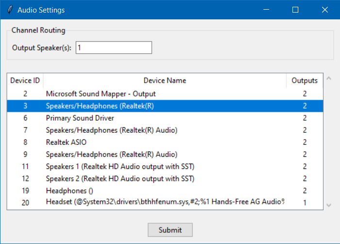
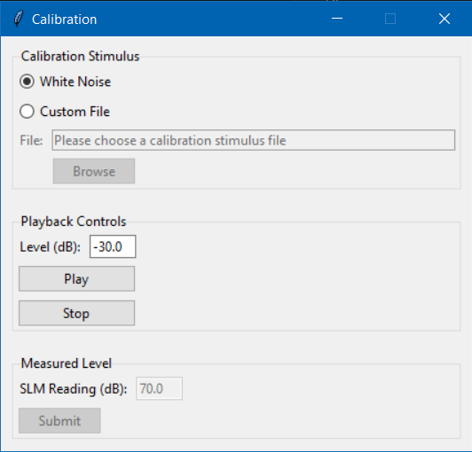

This controller is a simple yes/no presenter; it is not adaptive. Responses can be collected using a numberpad and/or on-screen buttons. Responses are categorized as signal detection proportions (i.e., hits, misses, false alarms, correct rejections) to aid in data analysis.
The Audio Settings window allows you to select an audio device and assign speakers for playback.
Device Selection. The Audio Settings window displays available audio devices in a table (see lower part of image below). Simply click to choose the desired device. Your selection will be highlighted in blue.
Speaker Assignment. To assign a speaker for playback, enter the speaker/channel number in the entry box (see upper part of image below). Note that you must provide a speaker for each channel in the audio file. For example, if your stimulus has eight channels, you must provide a list of eight speakers. Separate numbers with spaces when providing a list of speakers. For example: 1 2 3 4 5 6 7 8.

The Calibration window provides a simple way to calibrate your stimuli using a sound level meter (SLM).
Calibration Stimulus. You can choose to use the built-in white noise, or provide a custom file for the calibration signal (top group in image below).
Playback Controls. Use the "Level (dB)" entry box to adjust the playback level in dB FS (middle group in image below). The "Play" and "Stop" buttons allow you to start and stop the audio playback.
Measured Level. Use a SLM to measure the level of the calibration signal and enter the SLM reading into the "SLM Reading (dB)" entry box (bottom group in image below). Click submit, and the application will calculate an offset so that you can specify presentation levels in dB (whichever type of dB you set the SLM to when measuring). Note that the "Submit" button is disabled until you click the "Play" button.

pyinstaller...
Please use the contact information below to submit bug reports, feature requests and any other feedback.